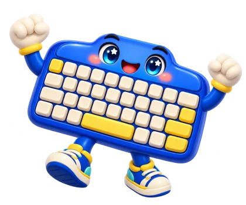

Tiểu học
Trung học cơ sở
Trung học phổ thông
Sai không sao, thử lại là tiến bộ. Ở đây tin học là công cụ giúp em học tốt mọi môn.

Thầy mở bài theo nhịp của lớp, em luyện thêm theo sức mình.
Từ bài trên lớp đến kĩ năng dùng mỗi ngày.
Mỗi lần sai, em biết thêm một cách chưa đúng. Làm lại không bị trừ điểm, chỉ có tiến bộ.
Bảng tính cho bài Toán, trình chiếu cho bài Sử, chương trình nhỏ cho bài Lí. Học Tin để học giỏi mọi môn.
AI là trợ lí. Em đối chiếu với sách, ghi rõ phần nào có AI hỗ trợ và tự đưa ra quyết định.
Chuỗi ngày học, huy hiệu và hồ sơ cuối năm giúp em nhìn thấy mình đã đi được bao xa.
Tin học là công cụ giúp em học tốt mọi môn: tìm thông tin đáng tin, trình bày ý tưởng rõ ràng, tính toán nhanh và giải quyết vấn đề từng bước. Ở đây em được thử, được sai và được làm lại cho đến khi hiểu. Mỗi bài là một bước nhỏ, và mỗi bước nhỏ đều đáng tự hào.
“Học Tin vui, dùng Tin giỏi.”
Đăng nhập bằng tài khoản Thầy cấp cho lớp.
Bản chạy thử: nhập tên bất kì để vào. Muốn thử khoá bài và giám sát, Thầy mở 2 tab trên cùng máy: một tab đăng nhập Giáo viên, một tab đăng nhập Học sinh.
Mỗi bài có 3 tầng: Biết, Hiểu, Vận dụng. Mỗi tầng 4 câu, đúng từ 3/4 câu thì tầng trên mới mở.
Chọn nghề em thích để xem Python giúp gì cho công việc đó sau này.
Bấm “Chạy” để xem. Em sửa số trong chương trình rồi chạy lại nhé.
Chia việc lớn thành từng bước nhỏ, làm lần lượt, kiểm tra từng bước. Cách nghĩ này dùng được cho mọi môn học và mọi công việc.
Việc làm tay mất cả buổi như tính toán, sắp xếp, đếm, đổi đơn vị, chương trình làm xong trong vài giây và không nhầm.
AI có thể viết code giúp em, nhưng em phải hiểu thì mới đọc, kiểm tra và sửa được. Người hiểu lập trình sẽ dùng AI giỏi hơn.
Python viết gần giống tiếng Anh, là ngôn ngữ trong sách Tin học 10, và Tin học là môn em có thể chọn khi thi tốt nghiệp THPT.
Em vừa rời khỏi trang làm bài. Nếu rời thêm 1 lần nữa, bài kiểm tra sẽ bị khoá cho đến khi Thầy mở lại.